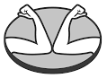

Sintetizador monofónico DS-Keys
Este sintetizador monofónico digital compacto le brindará muchas maneras de crear música, melodías, texturas y sonidos. Cuenta con una gran variedad de osciladores digitales los cuales poseen dos parámetros configurables:“Color” y “Timbre”, junto con un Envelope Generator y dos LFO, los cuales tienen la capacidad de modular dichos parámetros. Además cuenta con un poderoso Arpeggiator y un Sequencer que le dejará pre-grabar melodías y reproducirlas.
Samples
A continuación te dejamos algunos samples grabados con DS-Keys.
- 38 sonidos diferentes.
- Resolución: 8bit @ 96Khz.
- Envolope generator.
- 2 LFOs con 5 formas de onda diferentes.
- Entrada de sincronismo.
- Entrada MIDI.
- Salida de auriculares y/o línea.
- Teclado mecánico de una octava.
- Sequencer con 8 patrones encadenables de hasta 16 notas pre-grabadas.
- Arpeggiator con 13 modos y 8 escalas diferentes.
Diagrama en bloques
En el diagrama en bloques pueden verse todas las características del equipo y cómo sus diferentes sistemas se modulan y afectan entre sí.
Un universo de nuevos sonidos a tu alcance
El engine de sonidos de DS-Keys está basado en el módulo macro-oscilador "Braids" de Mutable Instruments, y mediante los controles de Color y Timbre, que modifican parámetros de la forma de onda seleccionada, DS-Keys se transforma en un equipo flexible y poderoso.
Tutoriales
Conectividad
DS-Keys posee una entrada micro USB que permite
alimentarlo desde cualquier cargador de celular o desde un puerto USB de tu PC más cercana.
Su entrada MIDI permite utilizando un adaptador MIDI-TRS tipo "A", conectar un controlador MIDI y de esta forma expandir el teclado a más octavas y modificar los parámetros de modulación.
La entrada de sincronismo te permitirá conectar este equipo a una máquina de ritmos como los Pocket Operators.
Arpegiador
El equipo cuenta con un arpegiador de hasta 24 notas, posee 8 escalas diferentes y 13 patrones de comportamiento diferentes, los cuales incluyen generación de notas aleatorias e introducción de probabilidades de ocurrencia.
Sequencer
DS-Keys cuenta con un sequencer de 8 patrones de 16 notas máximo cada uno, estos patrones pueden
encadenarse para reproducirse en el orden deseado.
Es posible armar una cadena de hasta 32 patrones.
Puede configurarse por cada nota una cierta cantidad de repeticiones,
o un porcentaje de chance de que la nota suene o se incluya un silencio en su lugar.
Conseguí el tuyo
Comprá tu equipo por medio de Mercado Libre y elegí entre sus múltiples opciones de pago.
Hacemos factura C. Envíos a todo el país por medio de Mercado Envíos.